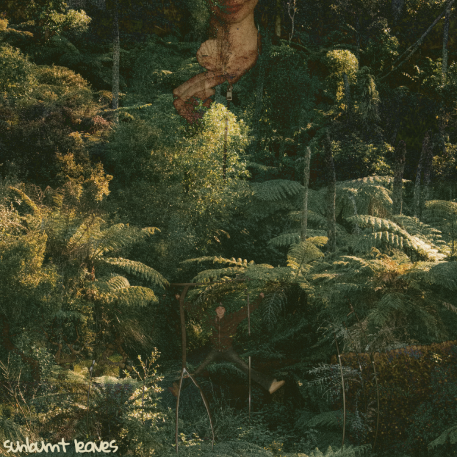
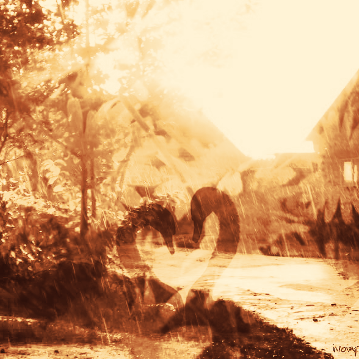
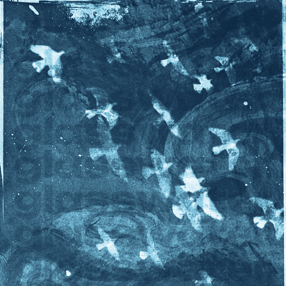
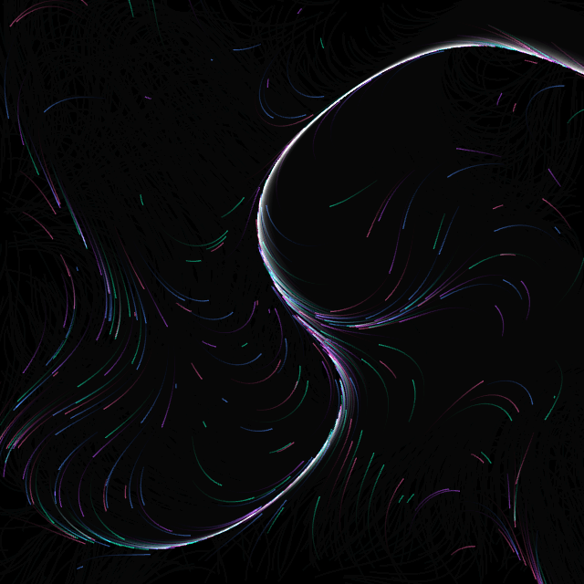
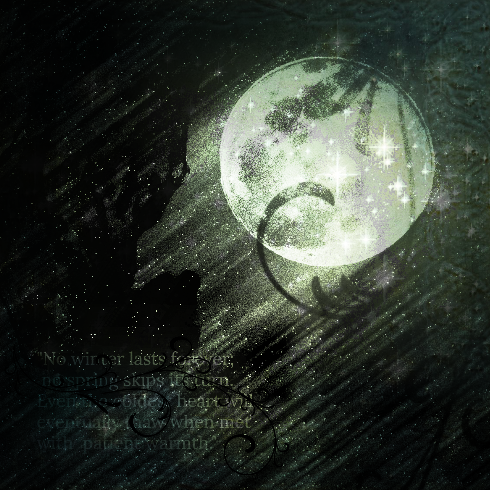
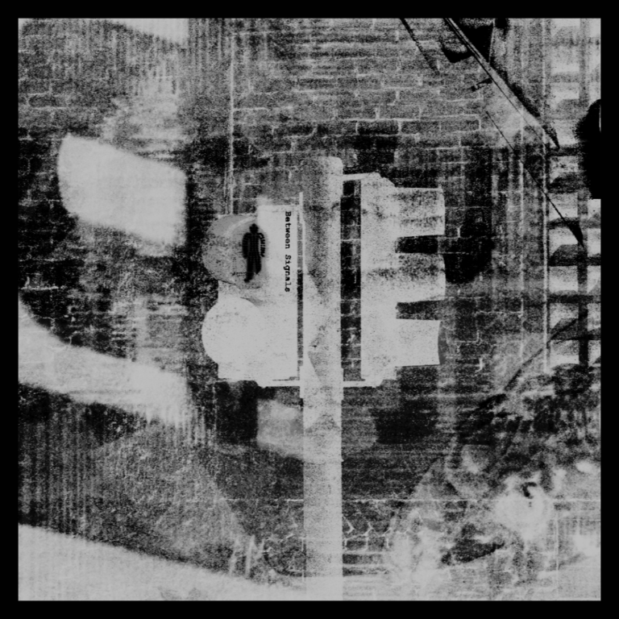

after the rain
Inspired by ivory, I played the piano after a rainy day stuck inside and a walk where I saw a bee and a bug; it’s produced in code with sampled strings, harp and soprano voices, and it moves from lonely to hopeful.
synthesized with javascript, python & piano played on a keyboard
Inspired by ivory, I played the piano after a rainy day stuck inside and a walk where I saw a bee and a bug; it’s produced in code with sampled strings, harp and soprano voices, and it moves from lonely to hopeful.

A slow, warm, hazy track about the bittersweet feeling of summer fading.


Glasswater is a song I made for walks along the coast with that overcoming sense of hope.
rainlight is a single I made whilst developing Bebeat, and the song was made in Bebeat.
Made for the photos section of this site :)
Amalthea is a three-track EP inspired by Hans Zimmer’s sci-fi scores, made in Bebeat.
Undersong (OST) is eight synthesized pieces, made entirely in JavaScript for the game Undersong. It isn’t on streaming, but can be listened to in-game :)

This is the album for my project Drift, the site I made as a fun relaxation project.

“No winter lasts forever; no spring skips its turn. Even the coldest heart will eventually thaw when met with patient warmth.”

Between Signals is my first album, seven tracks about waiting restlessly, impatiently and anxiously. I made it during the peak of my exam season, and that feeling of waiting for something to start or finish ended up in the music. Most of it is slow and ambient but a few tracks get fast and tense before settling back down. Every sound was made with JavaScript, and the whole album is built around one short four note melody that keeps coming back.
Third Impact is a seven-track instrumental album heavily inspired by Evangelion and the story it tells.
afterimage is a four-track breakcore EP about memories that linger, moving from soft and hazy to loud and heavy (this was mainly done as a trial and test to see how far I can push JavaScript and not to actually listen to 😭).
Most of the music on this site is created in code with JavaScript and Python, sometimes blended with live piano played on a keyboard. Instead of relying solely on a traditional DAW, I write instructions in code that tell the computer which notes to play, when to play them, and how each sound should be shaped. Your browser or Python script follows those instructions to synthesize and arrange the music alongside recorded instruments.
Where the sounds come from. In the pure-code tracks, there are no external samples and every sound is synthesized from scratch. Each note is converted into a pitch, then shaped like turning a dial to make it softer or brighter, quieter or louder. Bells and electric piano are made by letting one tone wobble another, while drums use fast pitch drops and filtered static. On newer pieces like after the rain, those coded foundations sit alongside sampled strings, harp, soprano voices, and live keyboard piano.
How a song is put together. Each song is a list of instructions that is read one tiny beat at a time, like sheet music for a computer. At each beat the code decides what plays: which drums hit, which chords sound, and when new instruments join or drop out. Small timing tweaks, like making every second beat land a little late, give the music a relaxed groove.
The finishing touches. Like a studio, the sound goes through some final effects. Reverb makes it feel like it’s in a big room, an echo repeats notes in rhythm, and the bass ducks out of the way each time the kick drum hits so it stays punchy. A little warmth and gentle volume control tie everything together.
Free to use. All of the music is copyright free :) Available across after the rain, sunburnt leaves, ivory, glasswater, rainlight, Amalthea, Drift, thaw, Between Signals, Third Impact, and afterimage on SoundCloud, with full source code and downloads linked above.
I’m still very new to this and any feedback would be appreciated, thank you!